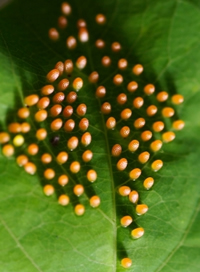

EGG

The cool thing about butterfly eggs is that if you look close enough you
can actually see the tiny caterpillar growing inside of it. Some butterfly
eggs are either round, oval, or even ribbed. The list can go on with other
features; but it does depends on the type of butterfly that laid the egg.
This also goes for what left the butterfly chooes to lay their eggs on.
Learn More